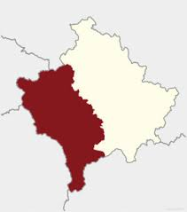
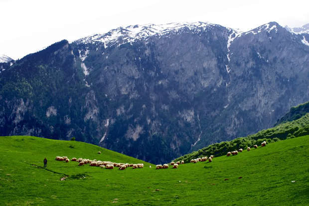
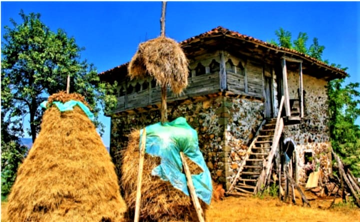
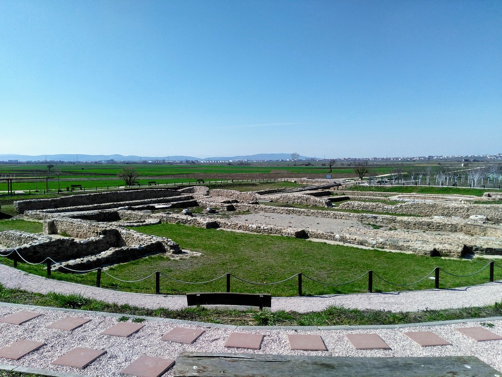
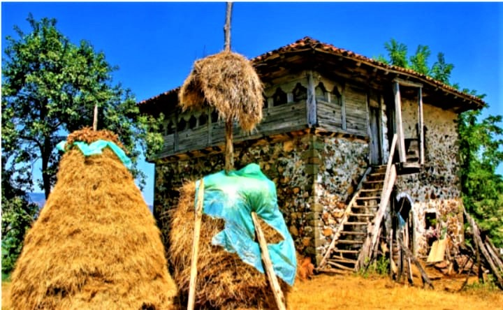
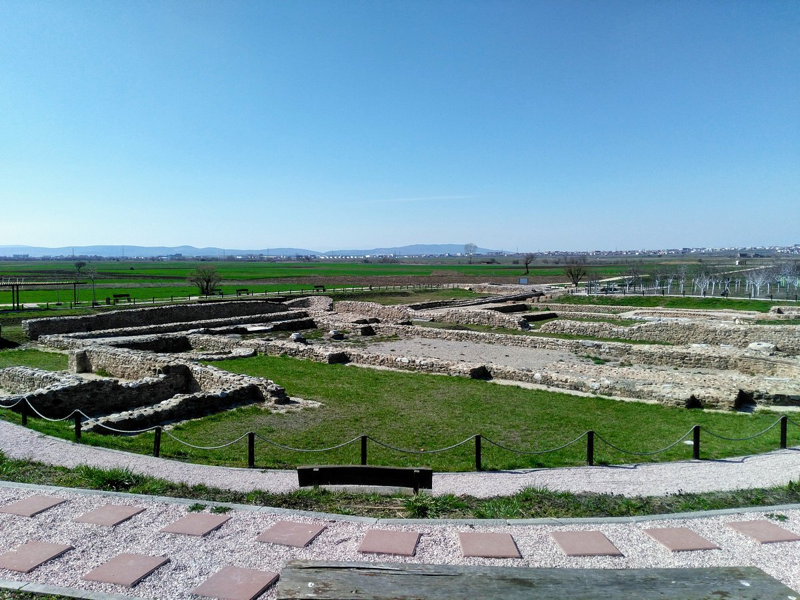
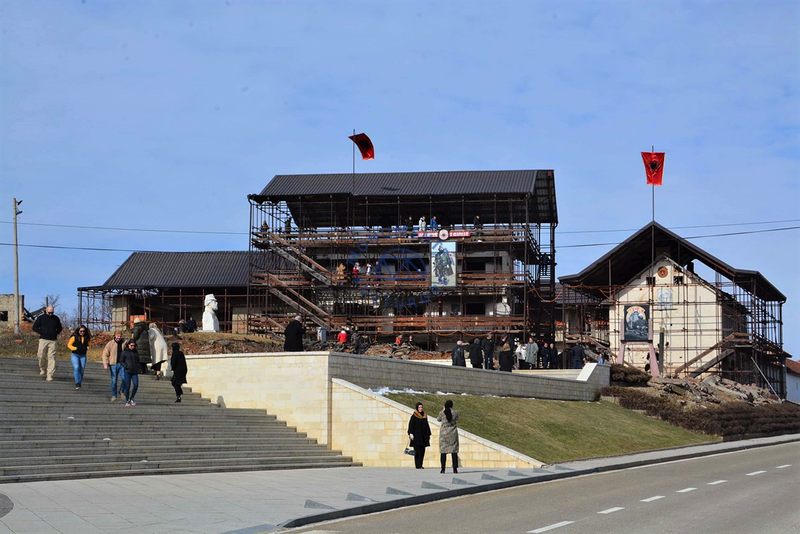
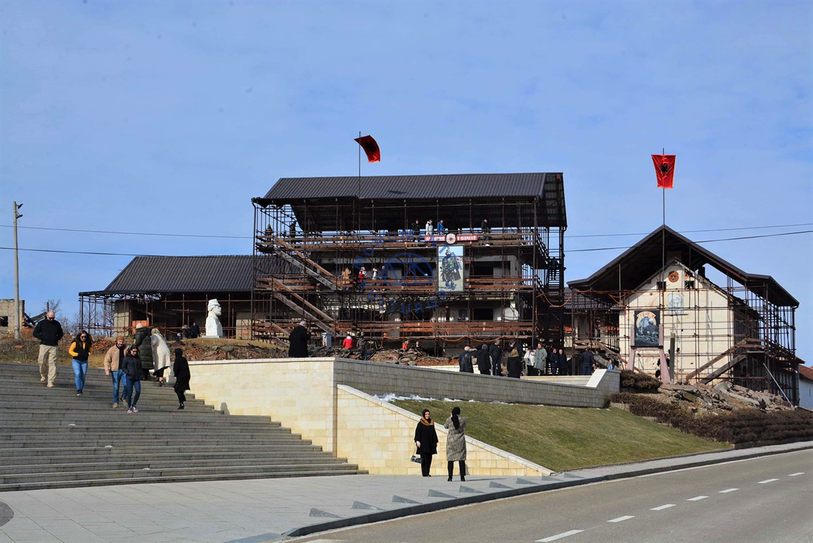

Rrafshi i Dukagjinit
Position: Western Kosovo
Population: One of the most populated regions
The Dukagjin Plain is known for its fertile land, agriculture, and strong traditional culture. Cities such as Peja, Gjakova, and Deçan are located in this region.
The region is rich in history, featuring monasteries, old bazaars, and traditional stone houses. Dukagjin is also closely connected with Albanian customary law and heritage.




 





 
